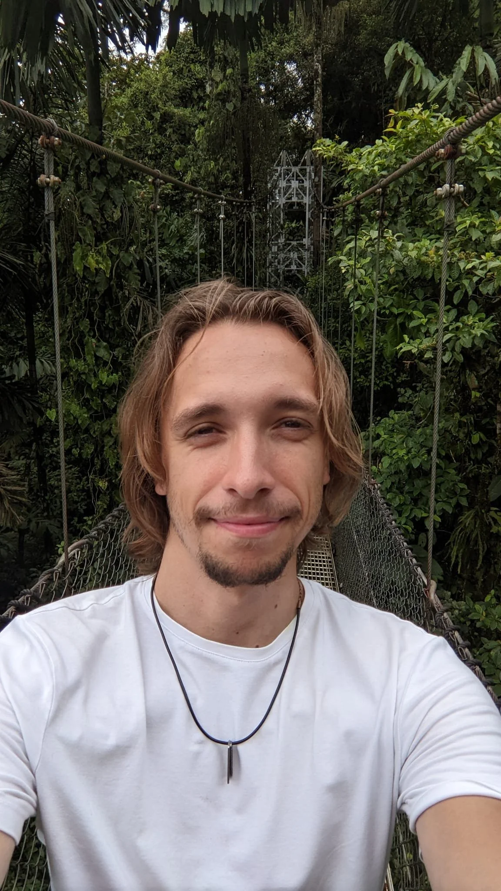

Starte dein Projekt & werde außergewöhnlich gut gefunden
Wir sind das Design Studio in Wien, das immer zuerst an den „Unfair Advantage“ unserer Kund:innen denkt. Also an die Sache, die sie wirklich besonders macht und von der Menge abhebt.
Daraus entwickeln wir simple, aber geniale Ideen – häufig in Form von strategischen Websites und ungewöhnlichen Kampagnen, die unsere Kund:innen weiterbringen.
